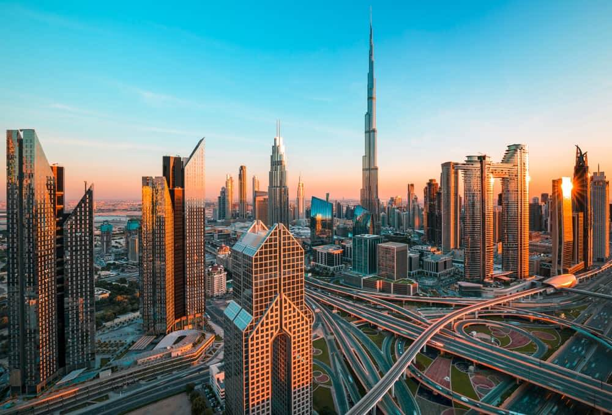
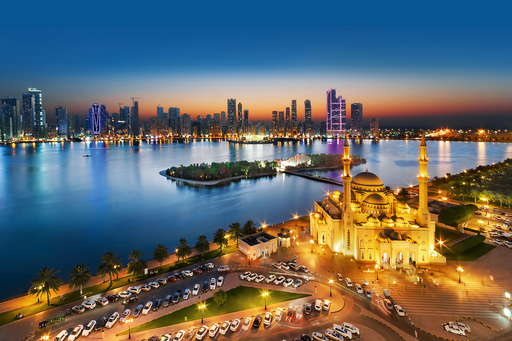
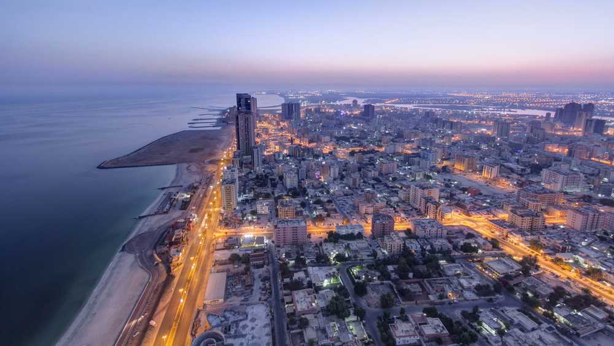
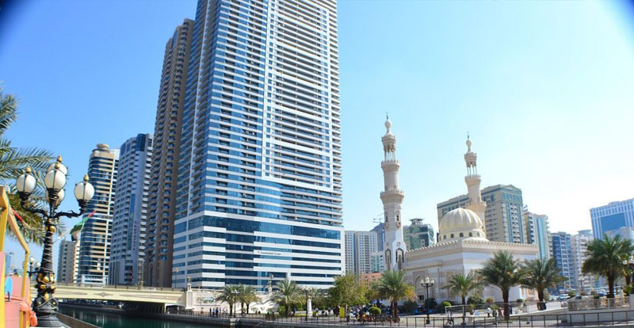
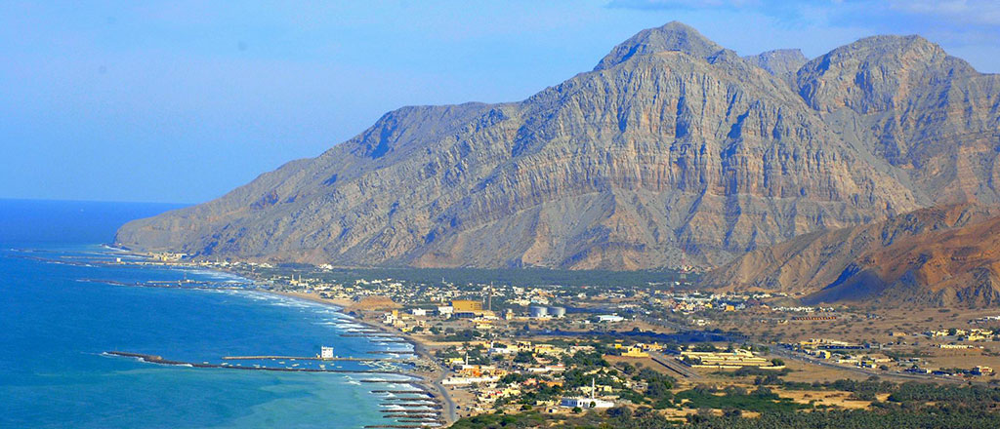
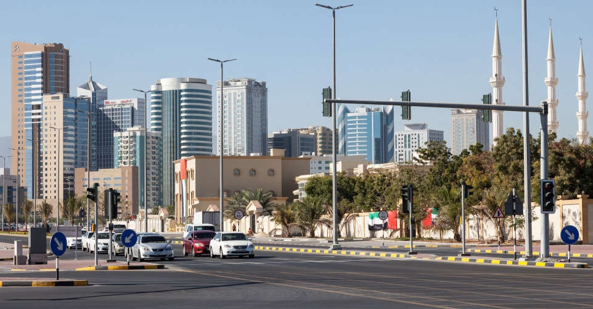

Abu Dhabi
Abu Dhabi, the capital of the United Arab Emirates, sits off the mainland on an island in the Persian (Arabian) Gulf. Its focus on oil exports and commerce is reflected by the skylines modern towers and shopping megacenters such as Abu Dhabi and Marina malls.

Dubai
Dubai is the most populous city in the United Arab Emirates (UAE) and the capital of the Emirate of Dubai, the most populated of the country's seven emirates. it has the world's tallest building which is "Burj Khalifa". With a total height of 829.8 m.

Sharjah
Sharjah is the third-most populous city in the United Arab Emirates, after Dubai and Abu Dhabi. The city is a center for culture and industry. It is the capital of the Emirate of Sharjah and forms part of the Dubai-Sharjah-Ajman metropolitan area.

Ajman
Ajman is the capital of the emirate of Ajman in the United Arab Emirates. It is the fifth-largest city in UAE after Dubai, Abu Dhabi, Sharjah and Al Ain. Located along the Persian Gulf, it is engulfed by the larger emirate of Sharjah in territory.

Umm Al Quwain
The Emirate of Umm Al Quwain is one of the seven constituent emirates of the United Arab Emirates, located in the north of the country. It is the second smallest and least populous emirate in the UAE and borders the Persian Gulf.

Ras Al Khaimah
Ras Al Khaimah (RAK) is the largest city and capital of the Emirate of Ras Al Khaimah, United Arab Emirates. It is the sixth-largest city in UAE after Dubai, Abu Dhabi, Sharjah, Al Ain and Ajman. The city is divided by a creek into two parts: old town in the west and Al Nakheel in the east.

Fujairah
It is the seventh-largest city in UAE, located on the Gulf of Oman. It is the only Emirati capital city on the UAE's east coast, Fujairah is known for its beaches and the solitude and relaxation they present